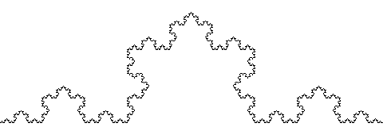
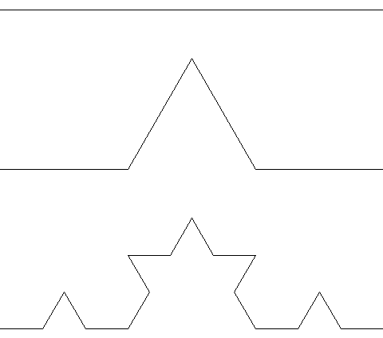
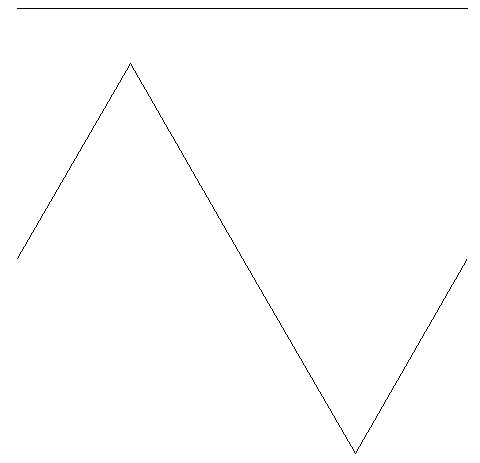

Vi vil nå jobbe videre med skilpaddekunsten fra tidligere. Denne
gangen skal vi tegne forskjellige figurer som kalles
fraktaler. Fraktaler er figurer som bygges opp av små kopier av seg
selv. I løpet av leksjonen vil vi også jobbe mer med funksjoner og
rekursjon.
Steg 1: Husker du skilpadden?
Vi har brukt skilpaddebiblioteket turtle tidligere. Du husker
kanskje kode som lignet på den under?
from turtle import *
shape('turtle')
shapesize(2)
bgcolor('darkblue')
color('yellow')
speed(3)
forward(270)
Sjekkliste
Steg 2: En fraktal
En fraktal er en figur som er bygd opp av mindre kopier av seg
selv. Vi skal nå se på hvordan vi kan tegne denne figuren:

Dette er en fraktal, klarer du å se at den består av mange små kopier
av seg selv? Det er kanskje lettere å se i de neste figurene?

Den øverste figuren er bare en rett strek. Den neste figuren består av
fire rette streker som danner et enkelt fjell. Hvis du nå ser nærmere
på den tredje figuren ser du at den består av fire kopier av det enkle
fjellet, igjen lagt slik at de danner et litt mer komplisert fjell.
Hvis du nå ser tilbake på den første figuren, ser du hvordan den
består av mange små kopier av slike fjell?
Steg 3: Vi tar det stegvis
Vi skal se på hvordan vi kan lage funksjoner som kan tegne figurene
over.
Nå skal vi lage en funksjon som kan tegne alle tre figurene!
Sjekkliste
Nå kommer det morsomste. Før vi kaster bort tid på å lage flere
funksjoner fire, fem og kanskje seks, skal vi se at vi kan lage
en funksjon som kan lage alle disse for oss!
Vi skal nå bruke noe som kalles rekursjon for å lage en funksjon som
gjør jobben til både en, to og tre. Rekursjon husker du kanskje
fra tidligere. Det betyr at vi lager en funksjon som kaller seg selv,
men for å gjøre noe som er litt enklere.
Med rekursjon ser man gjerne på det enkle tilfellet og det generelle
tilfellet. For disse figurene er en det enkle tilfellet hvor vi bare
trenger å tegne en rett strek.
Vi skal nå kombinere flere slike fjell til et fint snøflak.
Sjekkliste
Legg til denne funksjonen:
defsnoflak(lengde, dybde):for i in range(3):
fjell(lengde, dybde)
right(120)
Dette snøflaket er en av de mest kjente fraktalene. Det har fått
navnet Kochs snøflak fordi en av de første som studerte denne figuren
het Helge von Koch.
Steg 6: Firkantede fjell
La oss se på en variant av snøflaket.
Sjekkliste
Vi vil nå lage en fraktal på samme måte som Koch-figuren men med en
litt form. I stedet for en trekant som danner fjellet vil vi bruke en
firkant som i figuren under:
Det finnes mange fraktaler, og du kan lage dine helt egne også!
Prøv for eksempel å endre litt på vinklene og lengdene i fjell- eller
firkantfjell-funksjonene.
Eller kanskje du kan lage en helt annen figur? Prøv og tegn dine egne
en- og to-figurer som du så oversetter til Python.
Her er et forslag til en figur du kan prøve, men prøv også å lage dine
egne!

Forbedre denne siden
Funnet en feil? Kunne noe vært bedre? Hvis ja, vennligst gi oss tilbakemelding ved å lage en sak på Github eller fiks feilen selv om du kan. Vi er takknemlige for enhver tilbakemelding!